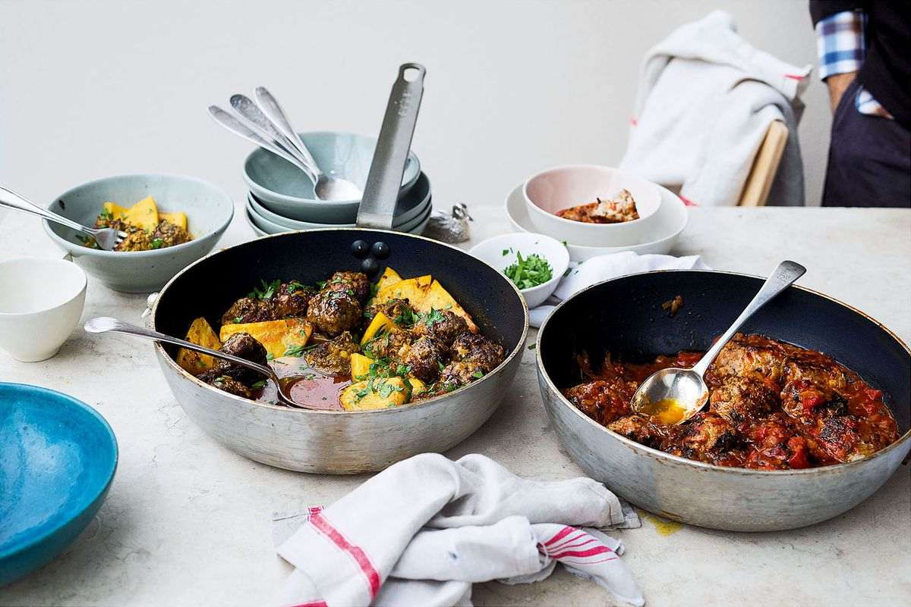

Ricotta and oregano meatballs

Using ricotta makes the meatballs super light and fluffy. The dish can be made a day in advance, kept in the fridge, and then reheated.
First make the tomato sauce. Put 2 tablespoons of oil into a sauté pan and place on a medium high heat. Add half the onion, half the garlic and half the oregano and cook for 8–10 minutes, stirring until the onions have softened without taking on colour. Add the tomatoes, half the stock, ½ teaspoon of salt and some black pepper. Reduce the temperature to medium and cook for 10–15 minutes, stirring from time to time, to thicken the sauce.
Meanwhile, make the meatballs. Place the remaining onion, garlic and oregano in a large bowl along with the beef, breadcrumbs, ricotta, Parmesan, egg, parsley, ¾ teaspoon of salt and some black pepper. Using your hands, mix everything together and shape into 12–14 balls.
Put 1 tablespoon of oil into a large frying pan and, when hot, add the meatballs (you will need to do this in two batches, adding another tablespoon of oil to the pan for the next batch). Sear for 8 minutes, turning throughout, then transfer to a separate plate.
Gently lower the meatballs into the sauce and pour over enough of the remaining stock so that the meatballs are almost covered. Add a little water, if you need, to make up the liquid. Place on a medium low heat and simmer very gently, covered, for 30 minutes. To thicken the sauce – it should have the consistency of a thick pasta sauce – remove the lid towards the end of cooking and increase the temperature a little. Remove from the heat and set aside for at least 10 minutes. Add extra oregano and serve.